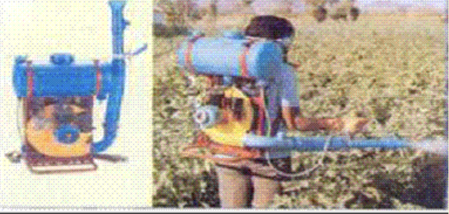

7.0 PLANT PROTECTION EQUIPMENT
- 7.1 Knapsack Sprayer
- 7.2 Motorised Knapsack Mist Blower Cum Duster
7.1 KNAPSACK SPRAYER

Features
Knapsack sprayer consists of a pump and an air chamber permanently installed in a 9 to 22.5 liters tank. The handle of the pump extending over the shoulder or under the arm of operator makes it possible to pump with one hand and spray with the other. Uniform pressure can be maintained by keeping the pump in continuous operation.
Specifications:
| Tank capacity (I) | : 9-22.5 |
| Pump cylinder inner dia (mm) | : 39-42 |
| Number of piston in pump cylinder | : one |
| Pressure chamber capacity (ml) | : 572-660 |
| Displacement volume (ml) | : 87.24 |
| Number of delivery spout | : one |
| Type of delivery spout | : Threaded |
| Cut off valve passage diameter (mm) | : 5 |
| Lance length (mm) | : 725 |
| Nozzle type | : Hollow cone |
| Spray angle | : 78 degree |
| Size of filling hole (mm) | : 94.9 |
| Pump discharge (ml/min) | : 610-896 |
| Power required | : one person |
Uses:
Knapsack sprayers are used for spraying insecticides and pesticides on small tress’ shrubs and row crops.
Cost of Machine : Rs.2,500/- to 3,500/-
7.2 MOTORISED KNAPSACK MIST BLOWER CUM DUSTER
Features
It consists of two plastic tanks (fuel and water/dust), engine, pump, spray hose, rope starter, delivery pipe, cut-off-cock, shoulder straps and a frame. It has a small 2-stroke petrol/kerosene engine of 35 cc to which a centrifugal fan is connected. The fan produces a high velocity air stream, which is diverted through a 90-degree elbow to a flexible (plastic) discharge hose, which has a divergent outlet. Upon rotation of the engine the fan produces a high velocity air stream. The control valve for the spray is opened gradually and adjusted for the desired flow rate. The operator directs the discharge hose to the target. It can be converted for dusting and ULV application.
Specifications:
| Length (mm) | : 460 |
| Width (mm) | : 210 |
| Height (mm) | : 540 |
| Weight (kg) | : 9-11 |
| Number of tanks | : 2 |
| Air velocity at outlet(m/s)/td> | : 65-75 |
| Field capacity(ha/h) | : 2-3 |
| Power requirement (hp/kW) | : 1.2/0.9 ,petrol or petrol/kerosene engine |
Uses:
It is suitable for spraying pesticides and fungicides. It is used for spraying in rice, fruits and vegetable crops. It can be used for applying pesticides in liquid and powder form.